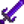

Forja

La Forja se encuentra en el nivel 10 de la Mazmorra del volcán en la Isla Jengibre. Te permite mejorar tus armas, encantar tus armas y herramientas, combinar anillos y cambiar la apariencia de las armas.
Forjado de armas
Un arma cuerpo a cuerpo (daga, martillo o espada) puede ser forjada hasta 3 veces para mejorar sus estadísticas. Cada forjado cuesta una gema y 10/15/20  Fragmento de cenizas, dependiendo de cuántas veces se haya forjado previamente.
Fragmento de cenizas, dependiendo de cuántas veces se haya forjado previamente.
Usar un  Diamante como gema rellena todos los niveles de forjado con mejoras al azar, pero solo consume 10 fragmentos de ceniza.
Diamante como gema rellena todos los niveles de forjado con mejoras al azar, pero solo consume 10 fragmentos de ceniza.
Ten en cuenta que el "nivel" se refiere al número de veces que un arma fue forjada con una gema específica. Así, por ejemplo, si un arma se forjó con un Rubí, luego con una Esmeralda y después con una Amatista, las estadísticas del arma tendrán +10% de poder de ataque, +2 de velocidad y +1 de peso.
| Gema | Efecto |
|---|---|
| Más | |
| Más | |
| Más | |
| Más | |
| Más | |
| Más |
Encantamientos
Puedes añadir un encantamiento al azar a cualquier arma cuerpo a cuerpo o herramienta, con la excepción de las Bateas, Guadaña, Guadaña dorada, Guadaña de Iridio y los Cubos de basura. Esto cuesta una  Esquirla prismática y 20
Esquirla prismática y 20  Fragmento de cenizas.
Fragmento de cenizas.
Cada arma o herramienta solo puede tener un encantamiento, y el encantamiento aplicado es aleatorio. Sin embargo, usar otra Esquirla Prismática permite re-aleatorizar el encantamiento. Las herramientas registran los dos encantamientos anteriores que se les han aplicado para que no se vuelvan a seleccionar al volver a aplicar un encantamiento.
Mejorar una herramienta mantiene su encanto.
Los encantamientos son aleatorios en base al número de veces que has encantado cualquier arma o herramienta, así que reiniciando el día y encantando una arma o herramienta diferente puede cambiar el resultado.
Encantamiento de armas
Solo se aplica a armas cuerpo a cuerpo (no se puede aplicar a los tirachinas).
| Nombre | Efecto |
|---|---|
| Diestro | 50% de reducción de tiempo en movimientos especiales. (Se acumula de forma multiplicativa con Acróbata hasta 75% de reducción de cooldown)[1] |
| Matabichos | Duplica el daño a las larvas, moscas, insectos, arañas, cangrejos de roca. permite matar bichos armados. |
| Cruzado | 50% más daño a las momias, fantasmas, esqueletos y espíritus de las sombras. Evita que las momias revivan. |
| Vampírico | 9% Probabilidad de recuperar algo de vida al matar monstruos. La cantidad curada es del 9% al ≈10,67% de la salud máxima del monstruo y no varía con el daño del arma. |
| Fabricante de heno | Recolectas más fibra al recoger hierbajos. También hay oportunidad de recoger heno. Cortar hierbas tiene un 50% de dar fibra y un 33% de dar heno (directo al silo o al inventario). |
Encantamiento de herramientas
| Nombre | Hacha | Caña | Azada | Pico | Regadera | Efecto |
|---|---|---|---|---|---|---|
| Auto-Gancho | Automáticamente engancha al pez/basura cuando muerde (lo cual inicia el minijuego si es un pez). | |||||
| Arqueólogo | Duplica la probabilidad de encontrar artefactos en los huecos de artefactos. | |||||
| Sin fondo | La regadera nunca se quedará sin agua. | |||||
| Eficiente | No usa energía. | |||||
| Generoso | 50% de probabilidad de encontrar el doble de ítems al cavar. | |||||
| del Maestro | Añade un nivel extra de pesca cuando el jugador tiene la caña de pescar en la mano. | |||||
| Poderoso | Añade 1 nivel de potencia extra para el pico, 2 para el hacha. | |||||
| Resistente | 50% de probabilidad de que el cebo y el aparejo no sean consumidos cuando se usan. | |||||
| Expansivo | Incrementa la cantidad de carga máxima para incrementar el área de efecto. Incrementa el área máxima de efecto a 5x5 casillas. | |||||
| Afilado | 3 maderas extras al cortar árboles de Roble, Arce, Pino, Palmera y Caoba. 3 maderas extra de los Árboles Setas. Probabilidad de obtener madera noble extra de los tocones. Probabilidad de obtener cultivos extra de los cultivos gigantes. | |||||
| Ligero | El uso de herramientas es un 33% más rápido. |
Armas infinitas
Puedes transformar un alma galáctica en un arma galaxia por 20 fragmentos de ceniza. Hacer esto 3 veces (por un total de 3 almas galácticas y 60 fragmentos de ceniza) convertirá el arma en un arma "Infinita", más poderosa. Añadir sólo 1 o 2 almas galácticas no afecta al arma. Las armas conservan sus encantamientos y forjas cuando se convierten en armas del Infinito.
| Imagen | Nombre | Descripción | Materiales |
|---|---|---|---|
| Espada infinita | La verdadera forma de la espada galáctica. |  Espada galaxia (1) | |
| Daga infinita | La verdadera forma de la daga galáctica. | ||
| Maza infinita | La verdadera forma del martillo galáctico. |
Apariencia de armas
Puedes fusionar dos armas a través de la forja. El arma resultante tendrá todas las estadísticas e información de la primera arma, pero la apariencia de la segunda. Solo puedes unir armas del mismo tipo (ej. no puedes unir un martillo con una espada). Los tirachinas no se pueden fusionar.
El costo es de 10 fragmentos de ceniza, y se consume la segunda arma.
Combinar anillos
Puedes combinar dos anillos en uno con efectos apilados. Cuesta 20 fragmentos de ceniza.
Hay dos restricciones:
- No puedes combinar dos anillos iguales en uno. (Puedes combinar dos anillos diferentes con el mismo efecto, como el Anillo brillante y el Anillo de piedras preciosas. Sus efectos juntos serán de la misma manera que si usas ambos anillos por separado.)
- No puedes combinar tres o más anillos en uno (es decir, a un anillo combinado no se pueden acoplar más).
Desmontar
Las armas y los anillos combinados pueden desmontarse para restablecer sus propiedades.
- En el caso de un arma, desmontarla elimina todas las mejoras de forja (pero no los encantamientos) y restablece su aspecto.
- Para un anillo combinado, desmontarlo te devuelve los anillos originales.
Desmontar es gratis, pero sólo devuelve algunos fragmentos de ceniza utilizados para forjar el objeto.
Para realizar el proceso de desmontaje, coloca los objetos que quieres desmontar para devolverlos a la forma que aparece en la casilla de la izquierda. Luego haz clic en el símbolo rojo con forma de "⨯" en la esquina derecha de abajo. Los objetos desmontados aparecerán en tu inventario, junto con los fragmentos de ceniza devueltos.
Pesca
La Forja es el único nivel de la Mazmorra del volcán donde es posible pescar. Es una de las dos localizaciones en el juego donde el jugador puede pescar anguilas de lava. Las trampas para cangrejos no pueden ser colocadas en la forja.
Hay un 5% de probabilidad de que el jugador capture un regalo que contenga el cuadro «Física 101». Este cuadro solo se puede coger una vez por jugador y partida.[2]
Si no pescaste la pintura, el porcentaje de probabilidad de pescar una anguila de lava es equivalente a 10 veces la zona de pesca en la que te encuentres. De lo contrario pescarás basura. Entonces, por ejemplo hay un 50% de probabilidades de pescar una anguila de lava y un 50% de probabilidades de enganchar basura si tu anzuelo pica/aterriza en un lugar de pesca de 5.[2]
Secreto
- Después de conseguir la Perfección, puedes interactuar con un mono rojo para obtener un sombrero secreto.
- La placa que está sobre la Forja tiene un mensaje cifrado.